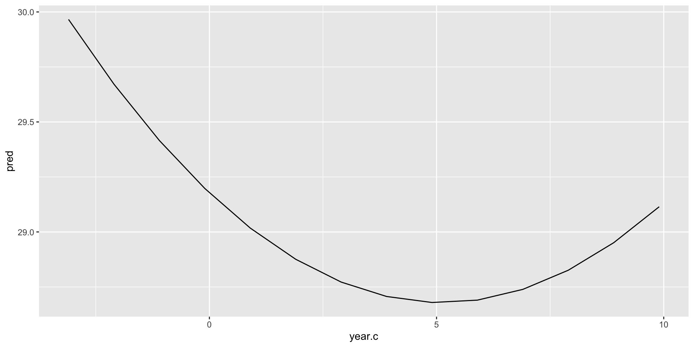
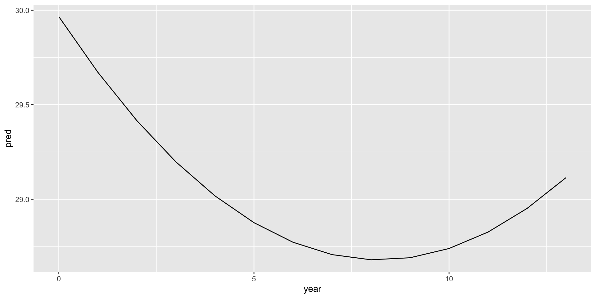

Thus far we have been sticking with monotonically increasing trajectories. This is a good assumption given the amount of data often found, along with the simplicity.
Often we want to see if trajectories are not straight. Development is not simple so our lines should not be.
Need effective strategies for line that bend that also balance tradeoffs with interprettability and overfitting
Polynomials (quadratic) level 1:
\[{Y}_{ij} = \beta_{0j} + \beta_{1j}(Time_{ij} - \bar{X)} + \beta_{2j}(Time_{ij} - \bar{X)}^2 + \varepsilon_{ij}\]
Level 2:
\[{\beta}_{0j} = \gamma_{00} + U_{0j}\]
\[{\beta}_{1j} = \gamma_{10} + U_{1j}\]
\[{\beta}_{2j} = \gamma_{20} + U_{2j}\]
# A tibble: 1,636 × 10
# Groups: mapid [620]
mapid age neuroticism extraversion openness agreeablness conscientiousness
<int> <int> <int> <int> <int> <int> <int>
1 64228 72 12 32 35 37 34
2 62688 78 12 35 26 26 34
3 10038 79 13 33 19 33 37
4 62689 67 19 17 34 34 24
5 61654 84 26 28 26 28 32
6 12445 90 14 30 18 37 33
7 61639 77 17 35 19 35 30
8 60906 73 7 38 35 31 38
9 61637 73 20 23 25 33 29
10 61225 76 4 42 21 37 37
# … with 1,626 more rows, and 3 more variables: gender <chr>, wave <dbl>,
# year <drtn>Linear mixed model fit by REML ['lmerMod']
Formula: extraversion ~ year + (year | mapid)
Data: personality
REML criterion at convergence: 9859.5
Scaled residuals:
Min 1Q Median 3Q Max
-5.3629 -0.4324 0.0085 0.4819 4.5266
Random effects:
Groups Name Variance Std.Dev. Corr
mapid (Intercept) 30.30045 5.505
year 0.03647 0.191 0.32
Residual 10.37352 3.221
Number of obs: 1634, groups: mapid, 620
Fixed effects:
Estimate Std. Error t value
(Intercept) 29.85895 0.24827 120.267
year -0.15794 0.02931 -5.389
Correlation of Fixed Effects:
(Intr)
year -0.220quadratic
I() wont work on difftime objects. Booo
quadratic
Linear mixed model fit by REML ['lmerMod']
Formula: extraversion ~ year + I(year^2) + (1 + year | mapid)
Data: personality
REML criterion at convergence: 9862.4
Scaled residuals:
Min 1Q Median 3Q Max
-5.3351 -0.4397 0.0049 0.4777 4.4871
Random effects:
Groups Name Variance Std.Dev. Corr
mapid (Intercept) 30.41595 5.5151
year 0.03525 0.1878 0.29
Residual 10.35605 3.2181
Number of obs: 1634, groups: mapid, 620
Fixed effects:
Estimate Std. Error t value
(Intercept) 29.965966 0.253474 118.221
year -0.313374 0.077231 -4.058
I(year^2) 0.019067 0.008721 2.186
Correlation of Fixed Effects:
(Intr) year
year -0.265
I(year^2) 0.195 -0.926Linear mixed model fit by REML ['lmerMod']
Formula: extraversion ~ year.c + I(year.c^2) + (1 + year.c | mapid)
Data: personality
REML criterion at convergence: 9862.4
Scaled residuals:
Min 1Q Median 3Q Max
-5.3351 -0.4397 0.0049 0.4777 4.4871
Random effects:
Groups Name Variance Std.Dev. Corr
mapid (Intercept) 32.63250 5.7125
year.c 0.03527 0.1878 0.38
Residual 10.35587 3.2181
Number of obs: 1634, groups: mapid, 620
Fixed effects:
Estimate Std. Error t value
(Intercept) 29.177742 0.259875 112.276
year.c -0.195157 0.034015 -5.737
I(year.c^2) 0.019067 0.008721 2.186
Correlation of Fixed Effects:
(Intr) year.c
year.c 0.286
I(year.c^2) -0.340 -0.512graphically, what does this look like?
non-centered model
compare with a linear model
Data: personality
Models:
p1: extraversion ~ year + (year | mapid)
p3: extraversion ~ year.c + I(year.c^2) + (1 + year.c | mapid)
npar AIC BIC logLik deviance Chisq Df Pr(>Chisq)
p1 6 9865.3 9897.7 -4926.7 9853.3
p3 7 9862.6 9900.4 -4924.3 9848.6 4.7373 1 0.02952 *
---
Signif. codes: 0 '***' 0.001 '**' 0.01 '*' 0.05 '.' 0.1 ' ' 1# A tibble: 82 × 8
id coa male peer cpeer alcuse_14 alcuse_15 alcuse_16
<int> <int> <int> <dbl> <dbl> <dbl> <dbl> <dbl>
1 1 1 0 1.26 0.247 1.73 2 2
2 2 1 1 0.894 -0.124 0 0 1
3 3 1 1 0.894 -0.124 1 2 3.32
4 4 1 1 1.79 0.771 0 2 1.73
5 5 1 0 0.894 -0.124 0 0 0
6 6 1 1 1.55 0.531 3 3 3.16
7 7 1 0 1.55 0.531 1.73 2.45 1
8 8 1 1 0 -1.02 0 0 0
9 9 1 1 0 -1.02 0 1 3.46
10 10 1 0 2 0.982 1 1 1
# … with 72 more rowslavaan 0.6-11 ended normally after 37 iterations
Estimator ML
Optimization method NLMINB
Number of model parameters 11
Number of equality constraints 2
Number of observations 82
Number of missing patterns 1
Model Test User Model:
Test statistic 0.000
Degrees of freedom 0
Parameter Estimates:
Standard errors Standard
Information Observed
Observed information based on Hessian
Latent Variables:
Estimate Std.Err z-value P(>|z|)
i =~
alcuse_14 1.000
alcuse_15 1.000
alcuse_16 1.000
s =~
alcuse_14 0.000
alcuse_15 2.000
alcuse_16 4.000
q =~
alcuse_14 0.000
alcuse_15 4.000
alcuse_16 16.000
Covariances:
Estimate Std.Err z-value P(>|z|)
i ~~
s 0.110 0.084 1.309 0.191
q -0.034 0.019 -1.786 0.074
s ~~
q 0.007 0.006 1.200 0.230
Intercepts:
Estimate Std.Err z-value P(>|z|)
.alcuse_14 0.000
.alcuse_15 0.000
.alcuse_16 0.000
i 0.630 0.103 6.118 0.000
s 0.198 0.080 2.465 0.014
q -0.016 0.020 -0.799 0.424
Variances:
Estimate Std.Err z-value P(>|z|)
q 0.000
.alcuse_14 (a) 0.335 0.052 6.403 0.000
.alcuse_15 (a) 0.335 0.052 6.403 0.000
.alcuse_16 (a) 0.335 0.052 6.403 0.000
i 0.536 0.146 3.683 0.000
s -0.015 0.046 -0.338 0.735Lets use the personality data from the mlm above. First gotta convert into wide.
personality2 <- read.csv("https://raw.githubusercontent.com/josh-jackson/longitudinal-2022/main/Subject_personality.csv")
p.wide<- personality2 %>%
group_by(mapid) %>%
arrange(neodate) %>%
dplyr::mutate(wave = seq_len(n())) %>%
select(-c(age:neuroticism), -c(openness:gender)) %>%
pivot_wider(names_from = "wave", values_from = "extraversion",names_prefix = "extra_")
p.wide# A tibble: 1,090 × 6
# Groups: mapid [1,090]
mapid extra_1 extra_2 extra_3 extra_4 extra_5
<int> <int> <int> <int> <int> <int>
1 64228 32 34 NA NA NA
2 62688 35 31 35 29 30
3 62685 28 NA NA NA NA
4 10038 33 28 NA NA NA
5 62689 17 18 15 NA NA
6 61654 28 26 NA NA NA
7 12445 30 32 NA NA NA
8 61639 35 27 30 NA NA
9 60906 38 40 32 41 NA
10 61637 23 28 28 14 20
# … with 1,080 more rowslavaan 0.6-11 ended normally after 135 iterations
Estimator ML
Optimization method NLMINB
Number of model parameters 14
Number of observations 1090
Number of missing patterns 6
Model Test User Model:
Test statistic 3.742
Degrees of freedom 6
P-value (Chi-square) 0.712
Parameter Estimates:
Standard errors Standard
Information Observed
Observed information based on Hessian
Latent Variables:
Estimate Std.Err z-value P(>|z|)
i =~
extra_1 1.000
extra_2 1.000
extra_3 1.000
extra_4 1.000
extra_5 1.000
s =~
extra_1 0.000
extra_2 1.000
extra_3 2.000
extra_4 3.000
extra_5 4.000
q =~
extra_1 0.000
extra_2 1.000
extra_3 4.000
extra_4 9.000
extra_5 16.000
Covariances:
Estimate Std.Err z-value P(>|z|)
i ~~
s 4.817 3.225 1.494 0.135
q -0.904 0.827 -1.093 0.274
s ~~
q -0.051 0.972 -0.053 0.958
Intercepts:
Estimate Std.Err z-value P(>|z|)
.extra_1 0.000
.extra_2 0.000
.extra_3 0.000
.extra_4 0.000
.extra_5 0.000
i 29.405 0.190 154.581 0.000
s -0.781 0.225 -3.476 0.001
q 0.128 0.080 1.590 0.112
Variances:
Estimate Std.Err z-value P(>|z|)
.extra_1 13.055 2.799 4.663 0.000
.extra_2 9.982 1.243 8.033 0.000
.extra_3 9.300 1.583 5.875 0.000
.extra_4 11.696 2.320 5.040 0.000
.extra_5 7.360 6.898 1.067 0.286
i 26.829 3.095 8.669 0.000
s -0.456 3.746 -0.122 0.903
q 0.068 0.277 0.246 0.806constrain variances
model.6 <- '
i =~ 1*extra_1 + 1*extra_2 + 1*extra_3 + 1*extra_4 + 1*extra_5
s =~ 0*extra_1 + 1*extra_2 + 2*extra_3 + 3*extra_4 + 4*extra_5
q =~ 0*extra_1 + 1*extra_2 + 4*extra_3 + 9*extra_4 + 16*extra_5
extra_1 ~~ Q*extra_1
extra_2 ~~ Q*extra_2
extra_3 ~~ Q*extra_3
extra_4 ~~ Q*extra_4
extra_5 ~~ Q*extra_5
'
p6 <- growth(model.6, data = p.wide, missing = "ML")lavaan 0.6-11 ended normally after 117 iterations
Estimator ML
Optimization method NLMINB
Number of model parameters 14
Number of equality constraints 4
Number of observations 1090
Number of missing patterns 6
Model Test User Model:
Test statistic 7.002
Degrees of freedom 10
P-value (Chi-square) 0.725
Parameter Estimates:
Standard errors Standard
Information Observed
Observed information based on Hessian
Latent Variables:
Estimate Std.Err z-value P(>|z|)
i =~
extra_1 1.000
extra_2 1.000
extra_3 1.000
extra_4 1.000
extra_5 1.000
s =~
extra_1 0.000
extra_2 1.000
extra_3 2.000
extra_4 3.000
extra_5 4.000
q =~
extra_1 0.000
extra_2 1.000
extra_3 4.000
extra_4 9.000
extra_5 16.000
Covariances:
Estimate Std.Err z-value P(>|z|)
i ~~
s 2.316 1.646 1.407 0.159
q -0.357 0.516 -0.693 0.489
s ~~
q -0.381 0.735 -0.518 0.605
Intercepts:
Estimate Std.Err z-value P(>|z|)
.extra_1 0.000
.extra_2 0.000
.extra_3 0.000
.extra_4 0.000
.extra_5 0.000
i 29.409 0.190 154.572 0.000
s -0.794 0.225 -3.537 0.000
q 0.132 0.080 1.648 0.099
Variances:
Estimate Std.Err z-value P(>|z|)
.extra_1 (Q) 10.482 0.823 12.730 0.000
.extra_2 (Q) 10.482 0.823 12.730 0.000
.extra_3 (Q) 10.482 0.823 12.730 0.000
.extra_4 (Q) 10.482 0.823 12.730 0.000
.extra_5 (Q) 10.482 0.823 12.730 0.000
i 29.237 1.870 15.635 0.000
s 1.309 2.633 0.497 0.619
q 0.120 0.216 0.558 0.577 extra_1 extra_2 extra_3 extra_4 extra_5
[1,] 32.65393 32.29662 32.04774 31.90729 31.87528
[2,] 32.35908 32.05731 31.75520 31.45275 31.14996
[3,] 28.37174 27.64033 27.19889 27.04742 27.18591
[4,] 30.56915 29.88826 29.52875 29.49065 29.77393
[5,] 19.08634 17.64813 16.79350 16.52247 16.83503
[6,] 27.68981 26.86826 26.39251 26.26255 26.47840as_tibble(lavPredict(p6,type="ov")) %>%
rowid_to_column("ID") %>%
pivot_longer(cols = starts_with("extra"), names_to = c(".value", "wave"), names_sep = "_") %>%
dplyr::mutate(wave = as.numeric(wave)) %>%
ggplot(aes(x = wave, y = extra, group = ID, color = factor(ID))) +
geom_line(alpha = .2) + theme(legend.position = "none") lavaan 0.6-11 ended normally after 178 iterations
Estimator ML
Optimization method NLMINB
Number of model parameters 13
Number of observations 1090
Number of missing patterns 6
Model Test User Model:
Test statistic 3.688
Degrees of freedom 7
P-value (Chi-square) 0.815
Parameter Estimates:
Standard errors Standard
Information Observed
Observed information based on Hessian
Latent Variables:
Estimate Std.Err z-value P(>|z|)
i =~
extra_1 1.000
extra_2 1.000
extra_3 1.000
extra_4 1.000
extra_5 1.000
s =~
extra_1 0.000
extra_2 1.893 0.989 1.914 0.056
extra_3 2.670 1.372 1.946 0.052
extra_4 2.745 1.710 1.605 0.108
extra_5 4.000
Covariances:
Estimate Std.Err z-value P(>|z|)
i ~~
s 1.629 1.070 1.522 0.128
Intercepts:
Estimate Std.Err z-value P(>|z|)
.extra_1 0.000
.extra_2 0.000
.extra_3 0.000
.extra_4 0.000
.extra_5 0.000
i 29.423 0.191 154.034 0.000
s -0.386 0.197 -1.960 0.050
Variances:
Estimate Std.Err z-value P(>|z|)
.extra_1 11.965 2.674 4.474 0.000
.extra_2 10.299 1.219 8.447 0.000
.extra_3 8.893 1.334 6.667 0.000
.extra_4 12.090 2.246 5.384 0.000
.extra_5 11.454 4.373 2.619 0.009
i 27.891 3.054 9.134 0.000
s 0.037 0.503 0.074 0.941as_tibble(lavPredict(p7,type="ov")) %>%
rowid_to_column("ID") %>%
pivot_longer(cols = starts_with("extra"), names_to = c(".value", "wave"), names_sep = "_") %>%
dplyr::mutate(wave = as.numeric(wave)) %>%
ggplot(aes(x = wave, y = extra, group = ID, color = factor(ID))) +
geom_line(alpha = .2) + theme(legend.position = "none") Fit more than 1 trajectory
Best to use when we have a reason for a qualitative difference at a time point. For example, before your health event you may have a different trajectory than after
Time modeled as dummy variables that represent different segments
The point of separation is called a knot. You can have as many as you want and these can be pre-specified or let the data specify
# A tibble: 2 × 7
time t0 t1 t2 t3 t4 t5
<chr> <dbl> <dbl> <dbl> <dbl> <dbl> <dbl>
1 time 1 0 1 2 2 2 2
2 time 2 0 0 0 1 2 3# A tibble: 2 × 7
time t0 t1 t2 t3 t4 t5
<chr> <dbl> <dbl> <dbl> <dbl> <dbl> <dbl>
1 time 1 0 1 2 3 4 5
2 time 2 0 0 0 1 2 3level 1:
\[{Y}_{ij} = \beta_{0j} + \beta_{1j}Time1_{ij} + \beta_{2j}Time2_{ij} + \varepsilon_{ij}\]
Level 2:
\[{\beta}_{0j} = \gamma_{00} + U_{0j}\]
\[{\beta}_{1j} = \gamma_{10} + U_{1j}\]
\[{\beta}_{2j} = \gamma_{20} + U_{2j}\]
0 1 2 2 2
0 0 0 1 2
Linear mixed model fit by REML ['lmerMod']
Formula: extraversion ~ time1 + time2 + (time1 | mapid)
Data: personality
REML criterion at convergence: 9862.2
Scaled residuals:
Min 1Q Median 3Q Max
-5.1925 -0.4375 0.0010 0.4925 4.4629
Random effects:
Groups Name Variance Std.Dev. Corr
mapid (Intercept) 28.9767 5.3830
time1 0.1359 0.3687 1.00
Residual 10.8042 3.2870
Number of obs: 1635, groups: mapid, 620
Fixed effects:
Estimate Std. Error t value
(Intercept) 29.8977 0.2489 120.123
time1 -0.6075 0.1229 -4.944
time2 -0.1020 0.2854 -0.357
Correlation of Fixed Effects:
(Intr) time1
time1 -0.247
time2 0.049 -0.297
optimizer (nloptwrap) convergence code: 0 (OK)
boundary (singular) fit: see help('isSingular')0 1 3 4 5 (Wave) 0 0 0 1 2 (same as time 2 previously)
Linear mixed model fit by REML ['lmerMod']
Formula: extraversion ~ wave + time2 + (wave | mapid)
Data: personality
REML criterion at convergence: 9863.1
Scaled residuals:
Min 1Q Median 3Q Max
-5.2416 -0.4507 0.0019 0.4924 4.4572
Random effects:
Groups Name Variance Std.Dev. Corr
mapid (Intercept) 26.5530 5.1530
wave 0.1343 0.3665 0.74
Residual 10.7591 3.2801
Number of obs: 1635, groups: mapid, 620
Fixed effects:
Estimate Std. Error t value
(Intercept) 30.5003 0.3069 99.378
wave -0.6038 0.1225 -4.929
time2 0.4480 0.3471 1.291
Correlation of Fixed Effects:
(Intr) wave
wave -0.618
time2 0.367 -0.587\[{Y}_{ij} = \beta_{0j} + \beta_{1j}Time1_{ij} + \beta_{2j}Time1_{ij}^2 + \beta_{3j}Time2_{ij} + \varepsilon_{ij}\]
Level 2:
\[{\beta}_{0j} = \gamma_{00} + U_{0j}\]
\[{\beta}_{1j} = \gamma_{10} + U_{1j}\]
\[{\beta}_{2j} = \gamma_{20} + U_{2j}\]
\[{\beta}_{3j} = \gamma_{30} + U_{3j}\]